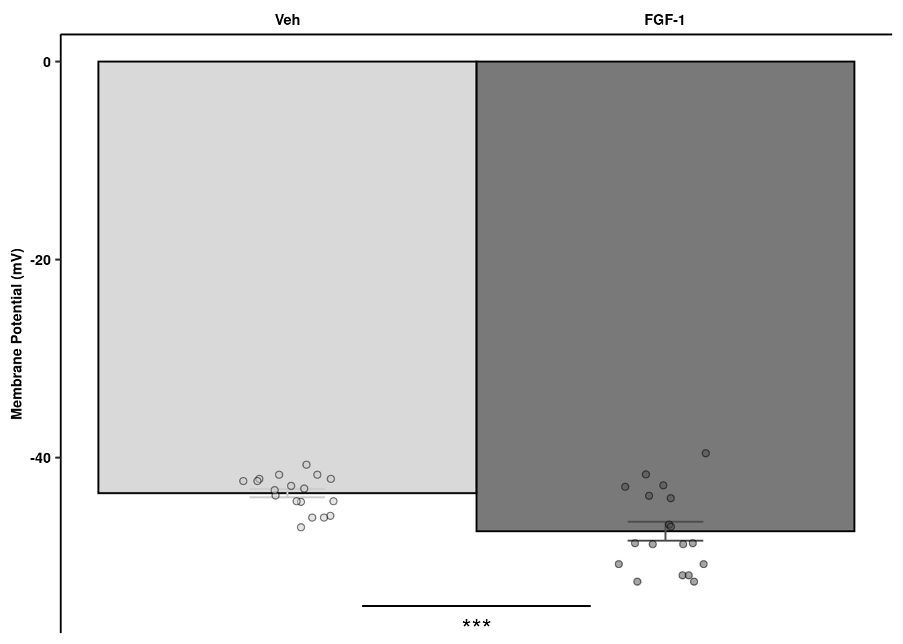
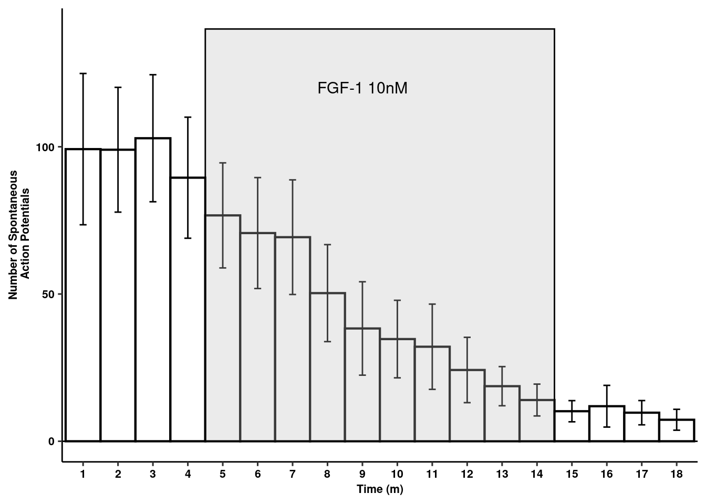
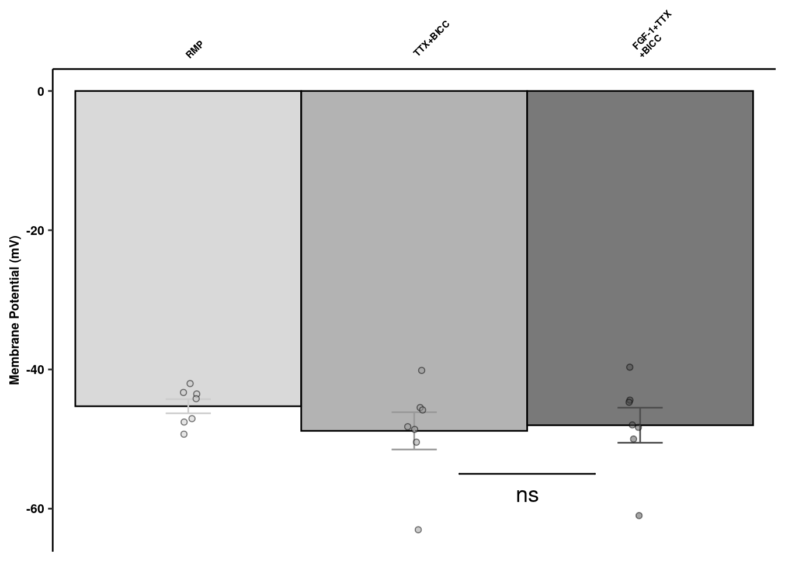
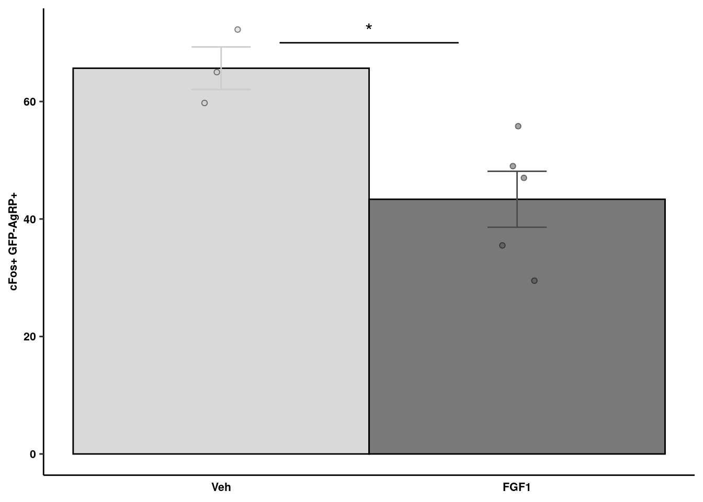

FGF Nuclei Neuron Prep
Last updated: 2019-12-02
Checks: 6 1
Knit directory: bentsen-rausch-2019/
This reproducible R Markdown analysis was created with workflowr (version 1.4.0). The Checks tab describes the reproducibility checks that were applied when the results were created. The Past versions tab lists the development history.
Great! Since the R Markdown file has been committed to the Git repository, you know the exact version of the code that produced these results.
The global environment had objects present when the code in the R Markdown file was run. These objects can affect the analysis in your R Markdown file in unknown ways. For reproduciblity it’s best to always run the code in an empty environment. Use wflow_publish or wflow_build to ensure that the code is always run in an empty environment.
The following objects were defined in the global environment when these results were created:
| Name | Class | Size |
|---|---|---|
| data | environment | 56 bytes |
| env | environment | 56 bytes |
The command set.seed(20191021) was run prior to running the code in the R Markdown file. Setting a seed ensures that any results that rely on randomness, e.g. subsampling or permutations, are reproducible.
Great job! Recording the operating system, R version, and package versions is critical for reproducibility.
Nice! There were no cached chunks for this analysis, so you can be confident that you successfully produced the results during this run.
Great job! Using relative paths to the files within your workflowr project makes it easier to run your code on other machines.
Great! You are using Git for version control. Tracking code development and connecting the code version to the results is critical for reproducibility. The version displayed above was the version of the Git repository at the time these results were generated.
Note that you need to be careful to ensure that all relevant files for the analysis have been committed to Git prior to generating the results (you can use wflow_publish or wflow_git_commit). workflowr only checks the R Markdown file, but you know if there are other scripts or data files that it depends on. Below is the status of the Git repository when the results were generated:
Ignored files:
Ignored: .Rproj.user/
Ignored: analysis/figure/
Ignored: test_files/
Untracked files:
Untracked: Rplots.pdf
Untracked: analysis/dge_resample.pdf
Untracked: analysis/figure_6.Rmd
Untracked: analysis/figure_7.Rmd
Untracked: analysis/supp1.Rmd
Untracked: code/sc_functions.R
Untracked: data/bulk/
Untracked: data/fgf_filtered_nuclei.RDS
Untracked: data/figures/
Untracked: data/filtglia.RDS
Untracked: data/glia/
Untracked: data/lps1.txt
Untracked: data/mcao1.txt
Untracked: data/mcao_d3.txt
Untracked: data/mcaod7.txt
Untracked: data/mouse_data/
Untracked: data/neur_astro_induce.xlsx
Untracked: data/neuron/
Untracked: data/synaptic_activity_induced.xlsx
Untracked: neuron_clusters.csv
Untracked: olig_ttest_padj.csv
Untracked: output/agrp_pcgenes.csv
Untracked: output/all_wc_markers.csv
Untracked: output/allglia_wgcna_genemodules.csv
Untracked: output/bulk/
Untracked: output/fig.RData
Untracked: output/fig4_part2.RData
Untracked: output/glia/
Untracked: output/glial_markergenes.csv
Untracked: output/integrated_all_markergenes.csv
Untracked: output/integrated_neuronmarkers.csv
Untracked: output/neuron/
Unstaged changes:
Modified: analysis/10_wc_pseudobulk.Rmd
Modified: analysis/11_wc_astro_wgcna.Rmd
Modified: analysis/13_olig_pseudotime.Rmd
Modified: analysis/15_tany_wgcna_pseudo.Rmd
Modified: analysis/6_glial_dge.Rmd
Modified: analysis/7_ventricular_wgcna.Rmd
Modified: analysis/8_astro_wgcna.Rmd
Modified: analysis/9_wc_processing.Rmd
Note that any generated files, e.g. HTML, png, CSS, etc., are not included in this status report because it is ok for generated content to have uncommitted changes.
These are the previous versions of the R Markdown and HTML files. If you’ve configured a remote Git repository (see ?wflow_git_remote), click on the hyperlinks in the table below to view them.
| File | Version | Author | Date | Message |
|---|---|---|---|---|
| Rmd | aaaeaff | Full Name | 2019-12-02 | wflow_publish(c(“analysis/figure_1.Rmd”, “analysis/figure_2.Rmd”)) |
| html | 985b406 | Full Name | 2019-12-02 | Build site. |
| Rmd | acd3c85 | Full Name | 2019-12-02 | wflow_publish(c(“analysis/figure_1.Rmd”, “analysis/figure_2.Rmd”)) |
#Load Libraries
library(Seurat)
library(tidyverse)
library(DESeq2)
library(here)
library(future)
library(cluster)
library(parallelDist)
library(ggplot2)
library(cowplot)
library(ggrepel)
library(future.apply)
library(reshape2)
library(gProfileR)
library(ggsignif)
plan("multiprocess", workers = 40)
options(future.globals.maxSize = 4000 * 1024^2)Set chunk options
Load prepped data
seur.sub <- readRDS(here("data/fgf_filtered_nuclei.RDS"))Food Intake and BG of mice
#Read in excel file of FI
fi_v <- readxl::read_xlsx(here("data/mouse_data/fig1/191120_FIBG.xlsx"), range = "C7:N24")
colnames(fi_v) <- c(paste0("V_D", seq_len(6)), paste0("F_D", seq_len(6)))
melt(fi_v, id.vars = NULL) %>%
na.omit() %>%
mutate(value = as.numeric(value)) %>%
dplyr::group_by(variable) %>%
dplyr::summarise(
mean = mean(value, na.rm = T),
sd = sd(value, na.rm = T),
se = sd / sqrt(length(variable))
) %>%
mutate(day = rep(c(0:5), 2)) %>%
separate(variable, sep = "_", into = "trt") %>%
ggplot(aes(x = day, y = mean, color = trt)) + geom_point(size = 1) +
geom_line(size = 1) +
geom_errorbar(aes(ymin = mean - se, ymax = mean + se), width = .2) +
ggpubr::theme_pubr() +
scale_color_manual(name = NULL, labels = c(expression(icv ~ hFGF1 ~ 3 * mu * g), "icv Vehicle pair-fed"),
values = c("gray30", "gray80")) +
scale_x_continuous(breaks = c(0, 1, 2, 3, 4, 5)) +
ylab("Daily food intake (g)") +
xlab("Days") + ylim(c(0, 10)) +
theme(legend.position = "none", legend.background = element_blank()) +
theme_figure -> fi_fig1Warning: NAs introduced by coercionWarning: Expected 1 pieces. Additional pieces discarded in 12 rows [1, 2,
3, 4, 5, 6, 7, 8, 9, 10, 11, 12].#Read in excel file of BG
bg <- readxl::read_xlsx(here("data/mouse_data/fig1/191120_FIBG.xlsx"), range = "B27:O44")
colnames(bg) <- c(paste0("V_D", seq_len(7)), paste0("F_D", seq_len(7)))
melt(bg, id.vars = NULL) %>%
na.omit() %>%
mutate(value = as.numeric(value)) %>%
dplyr::group_by(variable) %>%
dplyr::summarise(
mean = mean(value, na.rm = T),
sd = sd(value, na.rm = T),
se = sd / sqrt(length(variable))
) %>%
mutate(day = rep(c(0:6), 2)) %>%
separate(variable, sep = "_", into = "trt") %>%
ggplot(aes(x = day, y = mean, color = trt)) +
geom_point(size = 1) + geom_line(size = 1) +
geom_errorbar(aes(ymin = mean - se, ymax = mean + se), width = .2) +
ggpubr::theme_pubr() +
scale_color_manual(name = NULL, labels = c(expression(icv ~ hFGF1 ~ 3 * mu * g),
"icv Vehicle pair-fed"), values = c("gray30", "gray80")) +
scale_x_continuous(breaks = c(0, 1, 2, 3, 4, 5, 6),
label = c("Pre", "0", "1", "2", "3", "4", "5")) +
ylab("BG levels (mg/dl)") + xlab("Days") +
theme(legend.direction = "vertical", legend.position = "none", legend.background = element_blank()) +
theme_figure -> bg_fig1Warning: Expected 1 pieces. Additional pieces discarded in 14 rows [1, 2,
3, 4, 5, 6, 7, 8, 9, 10, 11, 12, 13, 14].blank <- plot_grid("")Warning in as_grob.default(plot): Cannot convert object of class character
into a grob.bg_fi <- plot_grid(fi_fig1, bg_fig1)Publication figures of clustering (all nuclei)
seur.sub <- RenameIdents(seur.sub, "Agrp" = "Neuron")
seur.sub <- RenameIdents(seur.sub, "Hist" = "Neuron")
seur.sub <- RenameIdents(seur.sub, "Neur" = "Neuron")
seur.sub <- RenameIdents(seur.sub, "Glia" = "Astro/Tany/Epend")
seur.sub <- RenameIdents(seur.sub, "COP" = "OPC/COP")
seur.sub <- RenameIdents(seur.sub, "Endo" = "Endothelial")
seur.sub <- RenameIdents(seur.sub, "Micro" = "Microglia")
data.frame(Embeddings(seur.sub, reduction = "umap")) %>%
mutate(group = seur.sub$group) %>%
mutate(celltype = Idents(seur.sub)) %>%
.[sample(nrow(.)),] %>%
mutate(group = replace(group, group == "FGF_Day-5", "FGF_d5")) %>%
mutate(group = replace(group, group == "FGF_Day-1", "FGF_d1")) %>%
mutate(group = replace(group, group == "PF_Day-1", "Veh_d1")) %>%
mutate(group = replace(group, group == "PF_Day-5", "Veh_d5")) -> umap_embed
label.df <- data.frame(cluster=levels(umap_embed$celltype),label=levels(umap_embed$celltype))
label.df_2 <- umap_embed %>%
dplyr::group_by(celltype) %>%
dplyr::summarize(x = median(UMAP_1), y = median(UMAP_2))
prop_seur_byclus <- ggplot(umap_embed, aes(x=UMAP_1, y=UMAP_2, color=celltype)) +
geom_point(size=1, alpha=0.5) +
geom_text_repel(data = label.df_2, aes(label = celltype, x=x, y=y),
size=3, fontface="bold", inherit.aes = F, bg.colour="white") +
xlab("UMAP1") + ylab("UMAP2") +
ggpubr::theme_pubr() + ggsci::scale_color_igv() + theme_figure + theme(legend.position = "none", legend.title=NULL)
prop_seur_group <- ggplot(umap_embed, aes(x=UMAP_1, y=UMAP_2, color=group)) +
geom_point(size=1, alpha=0.5) + guides(color = guide_legend(override.aes = list(size = 3))) +
ggpubr::theme_pubr() + ggsci::scale_color_jco(name = "Treatment Group") +
xlab("UMAP1") + ylab("UMAP2") +
theme_figure + theme(legend.position = c(.9,.3), legend.title = element_blank(),
legend.text = element_text(size=12, face="bold"))
plot_grid(prop_seur_group, prop_seur_byclus)
Recluster neurons
subset(seur.sub, ident="Neuron") %>%
reprocess_subset(., dims = 30, resolution = 0.1) -> fgf.neurWarning in FindVariableFeatures.Assay(object = assay.data, selection.method
= selection.method, : selection.method set to 'vst' but count slot is
empty; will use data slot insteadWarning in eval(predvars, data, env): NaNs producedWarning in hvf.info$variance.expected[not.const] <- 10^fit$fitted: number
of items to replace is not a multiple of replacement lengthWarning: The default method for RunUMAP has changed from calling Python UMAP via reticulate to the R-native UWOT using the cosine metric
To use Python UMAP via reticulate, set umap.method to 'umap-learn' and metric to 'correlation'
This message will be shown once per sessionModularity Optimizer version 1.3.0 by Ludo Waltman and Nees Jan van Eck
Number of nodes: 19416
Number of edges: 1033519
Running Louvain algorithm...
Maximum modularity in 10 random starts: 0.9599
Number of communities: 13
Elapsed time: 3 secondsDimPlot(fgf.neur, label = T)Warning: Using `as.character()` on a quosure is deprecated as of rlang 0.3.0.
Please use `as_label()` or `as_name()` instead.
This warning is displayed once per session.
Load Datasets
load("/projects/mludwig/Dataset_alignment/Data_preprocessing/Campbell_neurons_preprocessed.RData")
campbell <- UpdateSeuratObject(campbell)
Idents(campbell) <- "cell_type"
subset(campbell, idents = c("n34.unassigned(2)", "n33.unassigned(1)"), invert = T) %>%
NormalizeData(verbose = FALSE) %>%
FindVariableFeatures(
selection.method = "vst",
nfeatures = 2000, verbose = FALSE
) %>%
ScaleData(verbose = FALSE) %>%
RunPCA(npcs = 30, verbose = FALSE) -> campbell
# Load Chen Data
load("/projects/mludwig/Dataset_alignment/Data_preprocessing/Chen_neurons_preprocessed.RData")
chen <- UpdateSeuratObject(chen)
Idents(chen) <- "cell_type"
chen %>%
NormalizeData(verbose = FALSE) %>%
FindVariableFeatures(
selection.method = "vst",
nfeatures = 2000, verbose = FALSE
) %>%
ScaleData(verbose = FALSE) %>%
RunPCA(npcs = 30, verbose = FALSE) -> chen
# Load Romanov Data
load("/projects/mludwig/Dataset_alignment/Data_preprocessing/Romanov_neurons_preprocessed.RData")
romanov <- UpdateSeuratObject(romanov)
Idents(romanov) <- "cell_type"
romanov %>%
NormalizeData(verbose = FALSE) %>%
FindVariableFeatures(
selection.method = "vst",
nfeatures = 2000, verbose = FALSE
) %>%
ScaleData(verbose = FALSE) %>%
RunPCA(npcs = 30, verbose = FALSE) -> romanovPropagate Labels
#propagate Campbell labels
fgf.neur <- prop_function(reference = campbell, query = fgf.neur)
n01.Hdc n02.Gm8773/Tac1 n03 n04.Sst/Nts
41 76 27 66
n05.Nfix/Htr2c n06.Oxt n07 n08
34 31 279 285
n09.Th/Slc6a3 n10.Ghrh n11.Th/Cxcl12 n12.Agrp/Sst
200 497 319 525
n13.Agrp/Gm8773 n14.Pomc/Ttr n15.Pomc/Anxa2 n16.Rgs16/Vip
1708 502 325 472
n17.Rgs16/Dlx1 n18.Rgs16/Slc17a6 n19.Gpr50 n20.Kiss1/Tac2
106 258 66 655
n21.Pomc/Glipr1 n22.Tmem215 n23.Sst/Unc13c n24.Sst/Pthlh
306 751 548 243
n25.Th/Lef1 n26.Htr3b n27 n28.Qrfp
227 481 428 66
n29.Nr5a1/Adcyap1 n30.Nr5a1/Nfib n31.Fam19a2 n32.Slc17a6/Trhr
727 315 171 339 hist(fgf.neur$pred_CONF)
fgf.neur.camp <- subset(fgf.neur, pred_CONF > 0.75)
#propagate Chen labels
subset(fgf.neur, pred_CONF < 0.75) %>%
FindVariableFeatures(selection.method = "vst", nfeatures = 2000, verbose = FALSE) %>%
prop_function(reference = chen, query = .) -> fgf.neur.relab_chen
GABA1 GABA10 GABA11 GABA12 GABA13 GABA14 GABA15 GABA16 GABA17 GABA18
21 19 35 59 160 70 109 66 42 29
GABA2 GABA3 GABA4 GABA5 GABA6 GABA7 GABA8 GABA9 Glu1 Glu10
27 97 15 71 47 16 402 69 13 14
Glu11 Glu12 Glu13 Glu14 Glu15 Glu2 Glu3 Glu4 Glu5 Glu6
41 23 23 44 20 21 13 120 197 49
Glu7 Glu8 Glu9 Hista
204 45 31 16 hist(fgf.neur.relab_chen$pred_CONF)
fgf.neur.chen <- subset(fgf.neur.relab_chen, pred_CONF > 0.75)
#propagate Romanov labels
subset(fgf.neur.relab_chen, pred_CONF < 0.75) %>%
FindVariableFeatures(selection.method = "vst", nfeatures = 2000, verbose = FALSE) %>%
prop_function(reference = romanov, query = .) -> fgf.neur.relab_rom
Adcyap1 1 (Tac1) Adcyap1 2
9 15
Avp 1, high Avp 2, high
8 8
Avp 3, medium circadian 1 (Vip,Grp+/-)
6 6
circadian 2 (Nms,VIP+/-) circadian 3 (Per2)
12 13
Dopamine 1 Dopamine 2 (low VMAT2)
12 7
Dopamine 3 Dopamine 4
5 1
GABA 10 GABA 11 (Nts 1)
19 17
GABA 12 (Nts 2) GABA 13 (Galanin)
19 20
GABA 14 (Npy,Agrp) GABA 15 (Npy-medium)
10 7
GABA 2 (Gucy1a3) GABA 3 (Crh+/-, Lhx6)
15 15
GABA 4 (Crh+/-,Pgr15l) GABA 5 (Calcr, Lhx1)
24 31
GABA 6 (Otof, Lhx1) GABA 7 (Pomc+/-)
24 27
GABA 8 GABA 9
14 19
GABA1 Gad-low, Gnrh-/+
12 8
Ghrh Hcrt
2 12
Hmit+/- Npvf
24 6
Oxytocin 1 Oxytocin 2
4 4
Oxytocin 3 Oxytocin 4
10 7
Pmch Qrfp
2 1
Sst 1, low Sst 2, high
16 6
Sst 3, medium Trh 1 (low)
9 24
Trh 2 (medium) Trh 3 (high)
19 7
uc Vglut2 1 (Penk)
69 1
Vglut2 10 (Morn4,Prrc2a) Vglut2 11
2 2
Vglut2 12 (Mgat4b) Vglut2 13(Ninl,Rfx5,Zfp346)
2 4
Vglut2 14 (Col9a2) Vglut2 15 (Hcn1,6430411K18Rik)
5 3
Vglut2 16 (Gm5595, Tnr) Vglut2 17 (A930013F10Rik,Pou2f2)
1 3
Vglut2 18 (Zfp458,Ppp1r12b) Vglut2 2 (Crh+/-)
2 11
Vglut2 3 (Crh-+/-, low) Vglut2 4
40 1
Vglut2 5 (Myt1,Lhx9) Vglut2 6 (Prmt8,Ugdh)
3 11
Vglut2 7 (Pgam,Snx12) Vglut2 8
6 9
Vglut2 9 (Gpr149)
6 hist(fgf.neur.relab_rom$pred_CONF)
fgf.neur.rom <- subset(fgf.neur.relab_rom, pred_CONF > 0.75)
#transfer labels to fgf object
prop_lab <- data.frame(
cell.names = c(colnames(fgf.neur.camp), colnames(fgf.neur.chen), colnames(fgf.neur.rom)),
labels = c(fgf.neur.camp$pred_ID, fgf.neur.chen$pred_ID, fgf.neur.rom$pred_ID))
fgf.neur$ref <- as.character(prop_lab[match(colnames(fgf.neur), prop_lab$cell.names), "labels"])
fgf.neur$ref[is.na(fgf.neur$ref)] <- "unmap"
#save object with labels
saveRDS(fgf.neur, file = here("data/neuron/fgf_neur_mappingscores.RDS"))Filter and recluster dataset
fgf.neur.prop <- subset(fgf.neur, ref != "unmap")
fgf.neur.prop <- reprocess_subset(fgf.neur.prop, dims = 30, resolution = 0.1)Warning in FindVariableFeatures.Assay(object = assay.data, selection.method
= selection.method, : selection.method set to 'vst' but count slot is
empty; will use data slot insteadWarning in eval(predvars, data, env): NaNs producedWarning in hvf.info$variance.expected[not.const] <- 10^fit$fitted: number
of items to replace is not a multiple of replacement lengthModularity Optimizer version 1.3.0 by Ludo Waltman and Nees Jan van Eck
Number of nodes: 7430
Number of edges: 415931
Running Louvain algorithm...
Maximum modularity in 10 random starts: 0.9820
Number of communities: 15
Elapsed time: 0 secondsDefaultAssay(fgf.neur.prop) <- "SCT"
lab.mark <- FindAllMarkers(fgf.neur.prop, only.pos = T, logfc.threshold = 0.5)
table(fgf.neur.prop@active.ident, fgf.neur.prop$ref) %>%
as.data.frame() %>%
group_by(Var1) %>%
top_n(1, Freq) %>%
select(Var1, Var2) -> label_mapping
lab.mark$prop_label <- as.character(pull(label_mapping[match(lab.mark$cluster, label_mapping$Var1), "Var2"]))
write_csv(x = lab.mark, here("neuron_clusters.csv"))Rename clusters
rename <- c("Hcrt (Chen_Glu12)","Tcf7l2 (Chen_Glu4)","Grm7/Foxb1 (Chen_Glu5)","Nxph1/Foxb1 (Chen_Glu5)",
"Tac1/Htr2c (Chen_Glu6)","Hist (Camp_n1)","Tac1/Gad2 (Camp_n2)",
"Avp/Oxt (Camp_n6)","Agrp (Camp_n13)",
"Vip (Camp_n16)","Tac2 (Camp_n20)","Sst (Camp_n23)","Hs3st4/Nr5a1 (Camp_n29)",
"Fam19a2 (Camp_n31)","Pmch (Roma_Pmch)")
rename <- rename
names(rename) <- as.character(label_mapping$Var1)Neuron specific clustering
fgf.neur.prop[["recluster_0.1"]] <- Idents(object = fgf.neur.prop)
fgf.neur.prop <- RenameIdents(fgf.neur.prop, rename)
data.frame(Embeddings(fgf.neur.prop, reduction = "umap")) %>%
mutate(group = fgf.neur.prop$group) %>%
mutate(celltype = Idents(fgf.neur.prop)) %>%
sample_frac(1L) -> umap_embed
colnames(umap_embed)[1:2] <- c("UMAP 1", "UMAP 2")
label.df <- data.frame(cluster=levels(umap_embed$celltype),label=levels(umap_embed$celltype))
label.df_2 <- umap_embed %>%
group_by(celltype) %>%
dplyr::summarize(x = median(`UMAP 1`), y = median(`UMAP 2`))
prop_neur_byclus <- ggplot(umap_embed, aes(x=`UMAP 1`, y=`UMAP 2`, color=celltype)) +
geom_point(size=0.5, alpha=0.5) +
geom_text_repel(data = label.df_2, aes(label = celltype, x=x, y=y),
size=2,
inherit.aes = F, bg.colour="white", fontface="bold",
force=1, min.segment.length = unit(0, 'lines')) +
xlab("UMAP1") + ylab("UMAP2") +
ggpubr::theme_pubr(legend="none") + ggsci::scale_color_igv() + theme_figure Extract color scheme
g <- ggplot_build(prop_neur_byclus)
cols<-data.frame(colours = as.character(unique(g$data[[1]]$colour)),
label = as.character(unique(g$plot$data[, g$plot$labels$colour])))
colvec<-as.character(cols$colours)
names(colvec)<-as.character(cols$label)Resampling DEG
#Generate matrices
split_mats<-splitbysamp(fgf.neur.prop, split_by="sample")
names(split_mats)<-unique(Idents(fgf.neur.prop))
pb<-replicate(100, gen_pseudo_counts(split_mats, ncells=10))
names(pb)<-paste0(rep(names(split_mats)),"_",rep(1:100, each=length(names(split_mats))))
# Generate DESeq2 Objects
res<-rundeseq(pb)Identify neuronal populations with most DE genes at 24 hr
degenes<-lapply(res, function(x) {
tryCatch({
y<-x[[2]]
y<-na.omit(y)
data.frame(y)%>%filter(padj<0.1)%>%nrow()},
error=function(err) {NA})
})
boxplot<-lapply(unique(Idents(fgf.neur.prop)), function(x) {
z<-unlist(degenes[grep(as.character(x), names(degenes), fixed = T)])
})
names(boxplot)<-unique(Idents(fgf.neur.prop))
boxplot<-t(as.data.frame(do.call(rbind, boxplot)))
rownames(boxplot)<-1:100
genenum<-melt(boxplot)
write_csv(genenum, path = here("output/neuron/genenum.csv"))Figure 1 Panel C
deboxplot<-ggplot(genenum,aes(x=reorder(Var2, -value), y=value, fill=factor(Var2))) +
geom_boxplot(notch = T, alpha=0.75) +
scale_fill_manual(values = colvec) +
ggpubr::theme_pubr() +
theme(axis.text.x = element_text(angle=45, hjust=1), legend.position = "none") +
ylab("Number DEG") + xlab(NULL) + theme_figure
deboxplot
Specific Agrp analysis
agrp<-subset(fgf.neur.prop, ident="Agrp (Camp_n13)")
agrp %>% ScaleData(verbose=F) %>%
FindVariableFeatures(selection.method = "vst",
nfeatures = 2000) %>%
RunPCA(ndims.print=1:10) -> agrp
list_sub <- SplitObject(agrp, split.by="sample")
pb <- (lapply(list_sub, function(y) {
DefaultAssay(y) <- "SCT"
mat<-GetAssayData(y, slot="counts")
counts <- Matrix::rowSums(mat)
}) %>% do.call(rbind, .) %>% t() %>% as.data.frame())
trt<-ifelse(grepl("FGF", colnames(pb)), yes="F", no="P")
batch<-as.factor(sapply(strsplit(colnames(pb),"_"),"[",1))
day<-ifelse(as.numeric(as.character(batch))>10, yes="Day-5", no="Day-1")
group<-paste0(trt,"_",day)
meta<-data.frame(trt=trt, day=factor(day), group=group)
dds <- DESeqDataSetFromMatrix(countData = pb,
colData = meta,
design = ~ 0 + group)
keep <- rowSums(counts(dds) >= 5) > 5
dds <- dds[keep,]
dds<-DESeq(dds)
res_5<-results(dds, contrast = c("group","F_Day-5","P_Day-5"))
res_1<-results(dds, contrast = c("group","F_Day-1","P_Day-1"))
saveRDS(agrp, file = here("data/neuron/agrp_neur.RDS"))Filter 24 hr results
res_1<-as.data.frame(res_1)
res_1<-res_1[complete.cases(res_1),]
res_1<-res_1[order(res_1$padj),]
res_1$gene<-rownames(res_1)
write_csv(res_1, path=here("output/neuron/agrp_24hr_dge.csv"))Volcano Plot of DE genes
res_1 %>% add_rownames("gene") %>%
mutate(siglog=ifelse(padj<0.05&abs(log2FoldChange)>1, yes=T, no=F)) %>%
mutate(onlysig=ifelse(padj<0.05&abs(log2FoldChange)<1, yes=T, no=F)) %>%
mutate(onlylog=ifelse(padj>0.05&abs(log2FoldChange)>1, yes=T, no=F)) %>%
mutate(col=ifelse(siglog==T, yes="1", no =
ifelse(onlysig==T, yes="2", no =
ifelse(onlylog==T, yes="3", no="4")))) %>%
mutate(label=ifelse(padj<0.01, yes=gene, no="")) %>%
dplyr::select(gene, log2FoldChange, padj, col, label) -> volcWarning: Deprecated, use tibble::rownames_to_column() instead.volc_plot<-ggplot(volc, aes(y=(-log10(padj)), x=log2FoldChange, fill=factor(col), label=label)) +
xlab(expression(bold(log[2]*~Fold*~Change))) + ylab(expression(bold(-log[10]~pvalue)))+
geom_point(shape=21, size=3, alpha=0.75) +
geom_hline(yintercept = -log10(0.05), linetype="dashed") +
geom_vline(xintercept = c(-1,1), linetype="dashed") + geom_text_repel() +
scale_fill_manual(values = c("1" = "red", "2" = "blue", "3" = "darkgreen", "4" = "grey")) +
ggpubr::theme_pubr() +
theme(legend.position = "none") +
theme_figure
volc_plot 
GO Term Analysis
resgo<-res_1[res_1$padj<0.1,]
ego<-gprofiler(rownames(resgo), organism = "mmusculus", significant = T, custom_bg = rownames(dds),
src_filter = c("GO:BP","REAC","KEGG"),hier_filtering = "strong",
min_isect_size = 3,
sort_by_structure = T,exclude_iea = T,
min_set_size = 10, max_set_size = 300,correction_method = "fdr")
write_csv(ego, path=here("output/neuron/agrp_24hr_goterms.csv"))
ego %>% select(domain, term.name, term.id, p.value, intersection, overlap.size) %>%
separate(intersection, into = c(paste0("gene", 1:max(ego$overlap.size)), remove=T)) %>%
melt(id.vars=c("domain", "term.name","term.id", "p.value","overlap.size")) %>% na.omit() %>%
select(-variable) %>%
mutate(dir = ifelse(resgo[match(value, toupper(resgo$gene)),"log2FoldChange"] > 0, yes = 1, no = -1)) %>%
group_by(term.name, term.id, p.value) %>%
summarize(zscore = sum(dir)/sqrt(mean(overlap.size)), overlap.size = mean(overlap.size), domain = unique(domain)) -> ego_plotWarning: Expected 11 pieces. Missing pieces filled with `NA` in 20 rows [1,
2, 3, 4, 5, 6, 7, 8, 9, 10, 11, 12, 13, 14, 15, 16, 17, 18, 19, 20].goterm_plot <- ggplot(ego_plot, aes(x = zscore, y = -log10(p.value), label=str_wrap(term.name,20))) +
geom_point(aes(size = overlap.size, fill = domain), shape=21, alpha=0.5) +
scale_size(range=c(2,10)) +
ylab(expression(bold(-log[10]~pvalue))) +
xlab("z-score") + ggsci::scale_fill_npg() +
geom_vline(xintercept = 0, linetype="dashed", color="red") +
geom_text_repel(data = filter(ego_plot, -log10(p.value)>2), bg.colour="white",
force=1, min.segment.length = unit(0, 'lines'), lineheight=0.75, size=4) + xlim(c(-3,3)) +
ggpubr::theme_pubr(legend="none") + coord_cartesian(clip="off") + theme_figureMembrane Potential
readxl::read_xlsx(here("data/mouse_data/fig1/191116_arian_ephys.xlsx"), sheet = 1) %>%
dplyr::rename(Veh = RMP, `FGF-1` = `FGF-1 10nM`) %>% melt() -> rmp
rmp %>% dplyr::group_by(variable) %>%
dplyr::summarise(mean = mean(value), sd = sd(value), se = sd/sqrt(length(value))) %>%
ggplot(aes(x=variable, y=mean, fill=variable, color = variable)) +
geom_col(width=1, alpha=0.75, colour="black") +
geom_errorbar(aes(x=variable, ymin = mean-se, ymax=mean+se), width=0.2, position = position_dodge(0.9)) +
geom_jitter(data = rmp, inherit.aes = F, aes(x=variable, y=value, fill=variable),
alpha=0.5, shape=21, position = position_jitterdodge(.5)) + xlab(NULL) +
geom_signif(y_position=c(-55), xmin=c(1.2), xmax=c(1.8),
annotation=c("***"), tip_length=0, size = 0.5, textsize = 5, color="black", vjust = 2) +
scale_x_discrete(position = "top") +
ylab("Membrane Potential (mV)") + scale_fill_manual("Treatment", values=c("gray80","gray30")) +
scale_color_manual("Treatment", values=c("gray80","gray30")) +
coord_cartesian(clip="off") +
ggpubr::theme_pubr(legend="none") +
theme(axis.ticks.x = element_blank()) +
theme_figure -> ephysquant
ephysquant
Spontaneous action potentials
readxl::read_xlsx(here("data/mouse_data/fig1/191116_arian_ephys.xlsx"), sheet = 2) %>% melt(id.vars="Time") -> aps
aps$Time <- as.factor(aps$Time)
aps %>% dplyr::group_by(Time) %>%
dplyr::summarise(mean = mean(value), sd = sd(value), se = sd/sqrt(length(value))) -> aps
rects <- data.frame(start=4.5, end=14.5, group=seq_along(5))
act_pot<- ggplot(aps, aes(x=Time, y=mean)) +
geom_bar(stat="identity",colour="black", fill="white", width = 1, size=.75) +
geom_errorbar(aes(ymin=mean-se, ymax=mean+se), width=.2,
position=position_dodge(.9)) +
ggpubr::theme_pubr() +
geom_hline(yintercept=0) +
geom_rect(data=rects, inherit.aes = F, aes(xmin=start, xmax=end, ymin = 0, ymax = 140, group=group),
color="black", fill="grey", alpha=0.3) +
xlab("Time (m)") + ylab("Number of Spontaneous\n Action Potentials") +
annotate(geom="text", x=9, y=120, label="FGF-1 10nM", color="black", size=4) +
theme_figure
act_pot
Synaptic Channel Blockers
detach("package:here", unload = T)
library(here)
readxl::read_xlsx(here("data/mouse_data/fig1/191116_arian_ephys.xlsx"), sheet = 3) %>% dplyr::select(1:3) %>%
dplyr::rename(`FGF-1+TTX\n+BICC` = `FGF-1 10nM+TTX+Bicc`) %>% melt() -> scb
scb %>% dplyr::group_by(variable) %>% dplyr::summarise(mean = mean(value), sd = sd(value), se = sd/sqrt(length(value))) %>%
ggplot(aes(x=variable, y=mean, fill=variable, color = variable)) +
geom_col(width=1, alpha=0.75, colour="black") +
geom_errorbar(aes(x=variable, ymin = mean-se, ymax=mean+se), width=0.2, position = position_dodge(0.9)) +
geom_jitter(data = scb, inherit.aes = F, aes(x=variable, y=value, fill=variable),
alpha=0.5, shape=21, position = position_jitterdodge(.25)) + xlab(NULL) +
geom_signif(y_position=c(-55), xmin=c(2.2), xmax=c(2.8),
annotation=c("ns"), tip_length=0, size = 0.5, textsize = 5, color="black", vjust = 2) +
scale_x_discrete(position = "top") +
ylab("Membrane Potential (mV)") + scale_fill_manual("Treatment", values=c("gray80","gray60", "gray30")) +
scale_color_manual("Treatment", values=c("gray80","gray60", "gray30")) +
ggpubr::theme_pubr() + theme_figure +
theme(legend.position = "none", axis.ticks.x = element_blank(), axis.text.x=element_text(angle=45, hjust=-0.1, size=6)) +
coord_cartesian(clip="off") -> scbquant
scbquant
cFos quantification
readxl::read_xlsx(here("data/mouse_data/fig1/191116_Jenny_cFos.xlsx"), sheet = 1) %>% melt() %>% na.omit %>%
mutate(variable = fct_relevel(variable, "Veh","FGF1")) -> cfos
cfos %>% dplyr::group_by(variable) %>% dplyr::summarise(mean = mean(value), sd = sd(value), se = sd/sqrt(length(value))) %>%
ggplot(aes(x=variable, y=mean, fill=variable, color = variable)) +
geom_col(width=1, alpha=0.75, colour="black") +
geom_errorbar(aes(x=variable, ymin = mean-se, ymax=mean+se), width=0.2, position = position_dodge(0.9)) +
geom_jitter(data = cfos, inherit.aes = F, aes(x=variable, y=value, fill=variable),
alpha=0.5, shape=21, position = position_jitterdodge(.25)) + xlab(NULL) +
geom_signif(y_position=c(70), xmin=c(1.2), xmax=c(1.8),
annotation=c("*"), tip_length=0, size = 0.5, textsize = 5, color="black") +
ylab("cFos+ GFP-AgRP+") + scale_fill_manual("Treatment", values=c("gray80", "gray30")) +
scale_color_manual("Treatment", values=c("gray80", "gray30")) +
ggpubr::theme_pubr() +
theme(legend.position = "none", axis.ticks.x = element_blank()) +
coord_cartesian(clip="off") + theme_figure -> cfos_quant
cfos_quant
Build figure
intro <- plot_grid(blank, bg_fi, ncol=1, rel_heights = c(1.5,1), labels="a")
seurclus <- plot_grid(prop_seur_byclus, prop_seur_group, nrow=1, labels=c("b","c"))
top <- plot_grid(intro,seurclus, align = "h", axis="tblr", labels = "auto", nrow=1, rel_widths = c(1,2))
mid <- plot_grid(prop_neur_byclus, deboxplot, goterm_plot, align="hv", axis="tb", nrow=1, rel_widths = c(1.1,1,1.1),
labels = c("d","e","f"), scale = 0.95)
midephys <- plot_grid("", ephysquant, nrow=1, labels = c("g","h"), rel_widths = c(2,1), scale=0.8)Warning in as_grob.default(plot): Cannot convert object of class character
into a grob.lowephys <- plot_grid(act_pot, scbquant, nrow=1, labels = c("i","j"), rel_widths = c(2,1), scale=0.8)
ephys <- plot_grid(midephys,lowephys, ncol=1, rel_heights = c(1,1.25))
cfos <- plot_grid("", cfos_quant, nrow=1, labels=c("k","l"), rel_widths = c(3,1), scale=0.8)Warning in as_grob.default(plot): Cannot convert object of class character
into a grob.bottom <- plot_grid(ephys, cfos, nrow = 1)
fig1 <- plot_grid(top,mid,bottom, ncol=1, rel_heights=c(1,1.25,1.25))
ggsave(fig1, filename = here("data/figures/fig1/fig1_arranged.tiff"), width = 12, h=12, compression="lzw")
sessionInfo()R version 3.5.3 (2019-03-11)
Platform: x86_64-pc-linux-gnu (64-bit)
Running under: Storage
Matrix products: default
BLAS/LAPACK: /usr/lib64/libopenblas-r0.3.3.so
locale:
[1] LC_CTYPE=en_DK.UTF-8 LC_NUMERIC=C
[3] LC_TIME=en_DK.UTF-8 LC_COLLATE=en_DK.UTF-8
[5] LC_MONETARY=en_DK.UTF-8 LC_MESSAGES=en_DK.UTF-8
[7] LC_PAPER=en_DK.UTF-8 LC_NAME=C
[9] LC_ADDRESS=C LC_TELEPHONE=C
[11] LC_MEASUREMENT=en_DK.UTF-8 LC_IDENTIFICATION=C
attached base packages:
[1] parallel stats4 stats graphics grDevices utils datasets
[8] methods base
other attached packages:
[1] here_0.1 ggsignif_0.5.0
[3] gProfileR_0.6.7 reshape2_1.4.3
[5] future.apply_1.3.0 ggrepel_0.8.0.9000
[7] cowplot_1.0.0 parallelDist_0.2.4
[9] cluster_2.1.0 future_1.14.0
[11] DESeq2_1.22.2 SummarizedExperiment_1.12.0
[13] DelayedArray_0.8.0 BiocParallel_1.16.6
[15] matrixStats_0.54.0 Biobase_2.42.0
[17] GenomicRanges_1.34.0 GenomeInfoDb_1.18.2
[19] IRanges_2.16.0 S4Vectors_0.20.1
[21] BiocGenerics_0.28.0 forcats_0.4.0
[23] stringr_1.4.0 dplyr_0.8.3
[25] purrr_0.3.2 readr_1.3.1.9000
[27] tidyr_0.8.3 tibble_2.1.3
[29] ggplot2_3.2.1 tidyverse_1.2.1
[31] Seurat_3.0.3.9036
loaded via a namespace (and not attached):
[1] reticulate_1.13 R.utils_2.9.0 tidyselect_0.2.5
[4] RSQLite_2.1.1 AnnotationDbi_1.44.0 htmlwidgets_1.3
[7] grid_3.5.3 Rtsne_0.15 munsell_0.5.0
[10] codetools_0.2-16 ica_1.0-2 withr_2.1.2
[13] colorspace_1.4-1 highr_0.8 knitr_1.23
[16] rstudioapi_0.10 ROCR_1.0-7 gbRd_0.4-11
[19] listenv_0.7.0 labeling_0.3 Rdpack_0.11-0
[22] git2r_0.25.2 GenomeInfoDbData_1.2.0 bit64_0.9-7
[25] rprojroot_1.3-2 vctrs_0.2.0 generics_0.0.2
[28] xfun_0.8 R6_2.4.0 rsvd_1.0.2
[31] locfit_1.5-9.1 bitops_1.0-6 assertthat_0.2.1
[34] SDMTools_1.1-221.1 scales_1.0.0 nnet_7.3-12
[37] gtable_0.3.0 npsurv_0.4-0 globals_0.12.4
[40] workflowr_1.4.0 rlang_0.4.0 zeallot_0.1.0
[43] genefilter_1.64.0 splines_3.5.3 lazyeval_0.2.2
[46] acepack_1.4.1 broom_0.5.2 checkmate_1.9.4
[49] yaml_2.2.0 modelr_0.1.4 backports_1.1.4
[52] Hmisc_4.2-0 tools_3.5.3 gplots_3.0.1.1
[55] RColorBrewer_1.1-2 ggridges_0.5.1 Rcpp_1.0.2
[58] plyr_1.8.4 base64enc_0.1-3 zlibbioc_1.28.0
[61] RCurl_1.95-4.12 ggpubr_0.2.1 rpart_4.1-15
[64] pbapply_1.4-1 zoo_1.8-6 haven_2.1.0
[67] fs_1.3.1 magrittr_1.5 RSpectra_0.15-0
[70] data.table_1.12.2 lmtest_0.9-37 RANN_2.6.1
[73] whisker_0.3-2 fitdistrplus_1.0-14 hms_0.5.0
[76] lsei_1.2-0 evaluate_0.14 xtable_1.8-4
[79] XML_3.98-1.20 readxl_1.3.1 gridExtra_2.3
[82] compiler_3.5.3 KernSmooth_2.23-15 crayon_1.3.4
[85] R.oo_1.22.0 htmltools_0.3.6 Formula_1.2-3
[88] geneplotter_1.60.0 RcppParallel_4.4.3 lubridate_1.7.4
[91] DBI_1.0.0 MASS_7.3-51.4 Matrix_1.2-17
[94] cli_1.1.0 R.methodsS3_1.7.1 gdata_2.18.0
[97] metap_1.1 igraph_1.2.4.1 pkgconfig_2.0.2
[100] foreign_0.8-71 plotly_4.9.0 xml2_1.2.0
[103] annotate_1.60.1 XVector_0.22.0 rematch_1.0.1
[106] bibtex_0.4.2 rvest_0.3.4 digest_0.6.20
[109] sctransform_0.2.0 RcppAnnoy_0.0.12 tsne_0.1-3
[112] rmarkdown_1.13 cellranger_1.1.0 leiden_0.3.1
[115] htmlTable_1.13.1 uwot_0.1.3 gtools_3.8.1
[118] nlme_3.1-140 jsonlite_1.6 viridisLite_0.3.0
[121] pillar_1.4.2 ggsci_2.9 lattice_0.20-38
[124] httr_1.4.1 survival_2.44-1.1 glue_1.3.1
[127] png_0.1-7 bit_1.1-14 stringi_1.4.3
[130] blob_1.1.1 latticeExtra_0.6-28 caTools_1.17.1.2
[133] memoise_1.1.0 irlba_2.3.3 ape_5.3